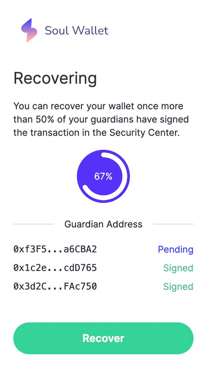
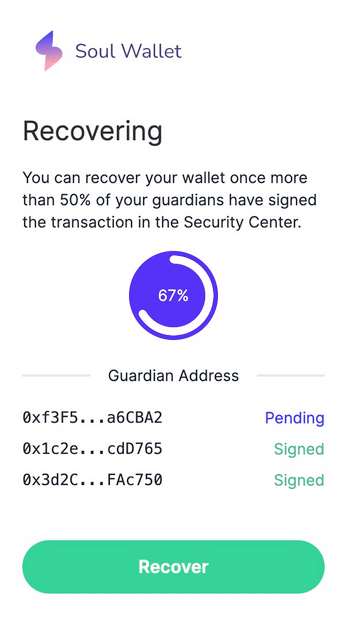

Make Ethereum Cypherpunk Again
2023 Dec 28
See all posts
Make Ethereum Cypherpunk Again
Special thanks to Paul Dylan-Ennis for feedback and
review.
One of my favorite memories from ten years ago was taking a
pilgrimage to a part of Berlin that was called the Bitcoin Kiez: a
region in Kreuzberg where there were around a dozen shops within a few
hundred meters of each other that were all accepting Bitcoin for
payments. The centerpiece of this community was Room
77, a restaurant and bar run by Joerg Platzer. In addition to simply
accepting Bitcoin, it also served as a community center, and all kinds
of open source developers, political activists of various affiliations,
and other characters would frequently come by.

Room 77, 2013. Source: my
article from 2013 on Bitcoin Magazine.
A similar memory from two months earlier was PorcFest (that's "porc"
as in "porcupine" as in "don't tread on me"), a libertarian gathering in
the forests of northern New Hampshire, where the main way to get food
was from small popup restaurants with names like "Revolution Coffee" and
"Seditious Soups, Salads and Smoothies", which of course accepted
Bitcoin. Here too, discussing the deeper political meaning of Bitcoin,
and using it in daily life, happened together side by side.
The reason why I bring these memories up is that they remind me of a
deeper vision underlying crypto: we are not here to just create isolated
tools and games, but rather build holistically toward a more free and
open society and economy, where the different parts - technological,
social and economic - fit into each other.
The early vision of "web3" was also a vision of this type, going in a
similarly idealistic but somewhat different direction. The term "web3"
was originally coined by Ethereum cofounder Gavin Wood, and it refers to
a different way of thinking about what Ethereum is: rather than seeing
it, as I initially did, as "Bitcoin plus smart contracts", Gavin thought
about it more broadly as one of a set of technologies that could
together form the base layer of a more open internet stack.

A diagram that Gavin Wood used in many of his early
presentations.
When the free open source software movement began in the 1980s and
1990s, the software was simple: it ran on your computer and read and
wrote to files that stayed on your computer. But today, most of our
important work is collaborative, often on a large scale. And so
today, even if the underlying code of an application is open
and free, your data gets routed through a centralized server
run by a corporation that could arbitrarily read your data, change the
rules on you or deplatform you at any time. And so if we want to extend
the spirit of open source software to the world of today, we
need programs to have access to a shared hard drive to store
things that multiple people need to modify and access. And what is
Ethereum, together with sister technologies like peer-to-peer messaging
(then Whisper, now Waku) and
decentralized file storage (then just Swarm, now also IPFS)? A public decentralized shared hard
drive. This is the original vision from which the now-ubiquitous term
"web3" was born.
Unfortunately, since 2017 or so, these visions have faded somewhat
into the background. Few talk about consumer crypto payments, the only
non-financial application that is actually being used at a large scale
on-chain is ENS, and there is a large ideological rift where significant
parts of the non-blockchain decentralization community see the crypto
world as a distraction, and not as a kindred spirit and a powerful ally.
In many countries, people do use cryptocurrency to send and
save money, but they often do this through centralized means: either
through internal transfers on centralized exchange accounts, or by
trading USDT on Tron.
Background: the humble Tron founder and decentralization pioneer
Justin Sun bravely leading forth the coolest and most decentralized
crypto ecosystem in the global world.
Having lived through that era, the number one culprit that I
would blame as the root cause of this shift is the rise in transaction
fees. When the cost of writing to the chain is $0.001, or even
$0.1, you could imagine people making all kinds of applications that use
blockchains in various ways, including non-financial ways. But when
transaction fees go to over $100, as they have during the peak of the
bull markets, there is exactly one audience that remains willing to play
- and in fact, because coin prices are going up and they're getting
richer, becomes even more willing to play: degen gamblers.
Degen gamblers can be okay in moderate doses, and I have talked to
plenty of people at events who were motivated to join crypto for the
money but stayed for the ideals. But when they are the largest
group using the chain on a large scale, this adjusts the public
perception and the crypto space's internal culture, and leads to many of
the other negatives that we have seen play out over the last few
years.
Now, fast forward to 2023. On both the core
challenge of scaling, and on various "side quests" of crucial importance
to building a cypherpunk future actually viable, we actually have a lot
of positive news to show:
These two things: the growing awareness that unchecked centralization
and over-financialization cannot be what "crypto is about", and the key
technologies mentioned above that are finally coming to fruition,
together present us with an opportunity to take things in a different
direction. Namely, to make at least a part of the Ethereum ecosystem
actually be the permissionless, decentralized, censorship
resistant, open source ecosystem that we originally came to
build.
What are some of these
values?
Many of these values are shared not just by many in the Ethereum
community, but also by other blockchain communities, and even
non-blockchain decentralization communities, though each community has
its own unique combination of these values and how much each one is
emphasized.
- Open global participation: anyone in the world
should be able to participate as a user, observer or developer, on a
maximally equal footing. Participation should be
permissionless.
- Decentralization: minimize the dependence of an
application on any one single actor. In particular, an
application should continue working even if its core developers
disappear forever.
- Censorship resistance: centralized actors should
not have the power to interfere with any given user's or application's
ability to operate. Concerns around bad actors should be addressed at
higher layers of the stack.
- Auditability: anyone should be able to validate an
application's logic and its ongoing operation (eg. by running a full
node) to make sure that it is operating according to the rules that its
developers claim it is.
- Credible neutrality: base-layer infrastructure should be neutral,
and in such a way that anyone can see that it is neutral even if they do
not already trust the developers.
- Building tools, not empires. Empires try to capture
and trap the user inside a walled garden; tools do their task but
otherwise interoperate with a wider open ecosystem.
- Cooperative mindset: even while competing, projects
within the ecosystem cooperate on shared software libraries, research,
security, community building and other areas that are commonly valuable
to them. Projects try to be positive-sum, both with each other
and with the wider world.
It is very possible to build things within the crypto ecosystem that
do not follow these values. One can build a system that one calls a
"layer 2", but which is actually a highly centralized system secured by
a multisig, with no plans to ever switch to something more secure. One
can build an account abstraction system that tries to be "simpler" than
ERC-4337, but at
the cost of introducing trust assumptions that end up removing the
possibility of a public mempool and make it much harder for new builders
to join. One could build an NFT ecosystem where the contents of the NFT
are needlessly stored on centralized websites, making it needlessly more
fragile than if those components are stored on IPFS. One could build a
staking interface that needlessly funnels users toward the
already-largest staking pool.
Resisting these pressures is hard, but if we do not do so, then we
risk losing the unique value of the crypto ecosystem, and recreating a
clone of the existing web2 ecosystem with extra inefficiencies and extra
steps.
It takes a sewer to
make a ninja turtle
The crypto space is in many ways an unforgiving environment. A 2021
article by Dan Robinson and Georgios Konstantiopoulos expresses this
vividly in the context of MEV, arguing that Ethereum
is a dark forest where on-chain traders are constantly vulnerable to
getting exploited by front-running bots, those bots themselves
are vulnerable to getting counter-exploited by other bots, etc. This is
also true in other ways: smart contracts regularly get hacked, users'
wallets regularly
get hacked, centralized exchanges fail even more spectacularly,
etc.
This is a big challenge for users of the space, but it also presents
an opportunity: it means that we have a space to actually experiment
with, incubate and receive rapid live feedback on all kinds of security
technologies to address these challenges. We have seen successful
responses to challenges in various contexts already:
| Centralized exchages getting hacked |
Use DEXes plus stablecoins, so centralized entities only need to be
trusted to handle fiat |
| Individual private keys are not secure |
Smart contract wallets: multisig, social recovery, etc |
| Users getting tricked into signing transactions that drain their
money |
Wallets like
Rabby showing their users results of transaction simulation |
| Users getting sandwich-attacked by MEV players |
Cowswap, Flashbots
Protect, MEV Blocker... |
Everyone wants the internet to be safe. Some attempt to make the
internet safe by pushing approaches that force reliance on a single
particular actor, whether a corporation or a government, that can act as
a centralized anchor of safety and truth. But these approaches sacrifice
openness and freedom, and contribute to the tragedy that is the growing
"splinternet".
People in the crypto space highly value openness and freedom. The level
of risks and the high financial stakes involved mean that the crypto
space cannot ignore safety, but various ideological and structural
reasons ensure that centralized approaches for achieving safety are not
available to it. At the same time, the crypto space is at the frontier
of very powerful technologies like zero knowledge proofs, formal
verification, hardware-based key security and on-chain social graphs.
These facts together mean that, for crypto, the open way to
improving security is the only way.
All of this is to say, the crypto world is a perfect testbed
environment to take its open and decentralized approach to security and
actually apply it in a realistic high-stakes environment, and mature it
to the point where parts of it can then be applied in the broader
world. This is one of my visions for how the idealistic parts
of the crypto world and the chaotic parts of the crypto world, and then
the crypto world as a whole and the broader mainstream, can turn their
differences into a symbiosis rather than a constant and ongoing
tension.
Ethereum as
part of a broader technological vision
In 2014, Gavin Wood introduced Ethereum as one of a suite of tools
that can be built, the other two being Whisper (decentralized messaging)
and Swarm (decentralized storage). The former was heavily emphasized,
but with the turn toward financialization around 2017 the latter were
unfortunately given much less love and attention. That said, Whisper
continues to exist as Waku, and is being
actively used by projects like the decentralized
messenger Status. Swarm continues to be developed, and now
we also have IPFS, which is used to
host and serve this blog.
In the last couple of years, with the rise of decentralized social
media (Lens, Farcaster, etc), we have an
opportunity to revisit some of these tools. In addition, we also have
another very powerful new tool to add to the trifecta: zero knowledge
proofs. These technologies are most widely adopted as ways
of improving Ethereum's scalability, as ZK rollups, but they are also
very useful for
privacy. In particular, the programmability of zero
knowlege proofs means that we can get past the false binary of
"anonymous but risky" vs "KYC'd therefore safe", and get privacy and
many kinds of authentication and verification at the same
time.
An example of this in 2023 was Zupass. Zupass is a
zero-knowledge-proof-based system that was incubated at Zuzalu,
which was used both for in-person authentication to events, and for
online authentication to the polling system Zupoll, the Twitter-lookalike Zucast and others. The key feature of Zupass
was this: you can prove that you are a resident of Zuzalu,
without revealing which member of Zuzalu you are.
Furthermore, each Zuzalu resident could only have one randomly-generated
cryptographic identity for each application instance (eg. a poll) that
they were signing into. Zupass was highly successful, and was applied
later in the year to do ticketing at Devconnect.

A zero-knowledge proof proving that I, as an Ethereum Foundation
employee, have access to the Devconnect coworking space.
The most practical use of Zupass so far has probably been
the polling. All kinds of polls have been made, some on politically
controversial or highly personal topics where people feel a strong need
to preserve their privacy, using Zupass as an anonymous voting
platform.
Here, we can start to see the contours of what an Ethereum-y
cypherpunk world would look like, at least on a pure technical level. We
can be holding our assets in ETH and ERC20 tokens, as well as all kinds
of NFTs, and use privacy systems based on stealth addresses and Privacy
Pools technology to preserve our privacy while at the same time
locking out known bad actors' ability to benefit from the same anonymity
set. Whether within our DAOs, or to help decide on changes to the
Ethereum protocol, or for any other objective, we can use zero-knowledge
voting systems, which can use all
kinds of credentials to help identify who has standing to vote and
who does not: in addition to voting-with-tokens as done in
2017, we can have anonymous polls of people who have made sufficient
contributions to the ecosystem, people who have attended enough events,
or one-vote-per-person.
In-person and online payments can happen with ultra-cheap
transactions on L2s, which take advantage of data availability space (or off-chain data secured with
Plasma) together with data
compression to give their users ultra-high scalability. Payments
from one rollup to another can happen with decentralized protocols like
UniswapX.
Decentralized social media projects can use various storage layers to
store activity such as posts, retweets and likes, and use ENS (cheap on L2 with
CCIP) for usernames. We can have seamless integration between
on-chain tokens, and off-chain attestations held personally and
ZK-proven through systems like Zupass.
Mechanisms like quadratic voting, cross-tribal consensus
finding and prediction markets
can be used to help organizations and communities govern themselves and
stay informed, and blockchain and ZK-proof-based identities can make
these systems secure against both centralized censorship from the inside
and coordinated manipulation from the outside. Sophisticated wallets can
protect people as they participate in dapps, and user interfaces can be
published to IPFS and accessed as .eth domains, with hashes
of the HTML, javascript and all software dependencies updated directly
on-chain through a DAO. Smart contract wallets, born to help people not
lose tens of millions of dollars of their cryptocurrency, would expand
to guard people's "identity roots", creating a system that is even
more secure than centralized identity providers like "sign in with
Google".

Soul Wallet recovery interface. I personally am at the point of
being more willing to trust my funds and identity to systems like this
than to centralized web2 recovery already.
We can think of the greater Ethereum-verse (or "web3") as creating an
independent tech protocol stack, that is competing with the
traditional centralized protocol stack at all levels. Many people will
mix-and-match both, and there are often clever ways to match both: with
ZKEmail, you can even make an
email address be one of the guardians of your social recovery wallet!
But there are also many synergies from using the different parts of the
decentralized stack together, especially if they are designed to better
integrate with each other.
| Banking system |
ETH, stablecoins, L2s for payments, DEXes (note: still need banks
for loans) |
| Receipts |
Links to transactions on block explorers |
| Corporations |
DAOs |
DNS (.com, .io, etc) |
ENS (.eth) |
| Regular email |
Encrypted email (eg. Skiff) |
| Regular messaging (eg. Telegram) |
Decentralized messaging (eg. Status) |
| Sign in with Google, Twitter, Wechat |
Sign in with Ethereum, Zupass,
Attestations via EAS, POAPs, Zu-Stamps...
+ social recovery |
| Publishing blogs on Medium, etc |
Publishing self-hosted blogs on IPFS (eg. using Fleek) |
| Twitter, Facebook |
Lens, Farcaster... |
| Limit bad actors through all-seeing big brother |
Constrain bad actors through zero knowledge proofs |
One of the benefits of thinking about it as a stack is that this fits
well with Ethereum's pluralist ethos. Bitcoin is trying to solve one
problem, or at most two or three. Ethereum, on the other hand, has lots
of sub-communities with lots of different focuses. There is no single
dominant narrative. The goal of the stack is to enable this pluralism,
but at the same time strive for growing interoperability across this
plurality.
The social layer
It's easy to say "these people doing X are a corrupting influence and
bad, these people doing Y are the real deal". But this is a lazy
response. To truly succeed, we need not only a vision for a technical
stack, but also the social parts of the stack that make the
technical stack possible to build in the first place.
The advantage of the Ethereum community, in principle, is that we
take incentives seriously. PGP wanted to put cryptographic keys into
everyone's hands so we can actually do signed and encrypted email for
decades, it largely failed, but then we got cryptocurrency and suddenly
millions of people have keys publicly associated to them, and we can
start using those keys for other purposes - including going full circle
back to encrypted email and messaging. Non-blockchain decentralization
projects are often chronically underfunded, blockchain-based projects
get a 50-million dollar series B round. It is not from the benevolence
of the staker that we get people to put in their ETH to protect the
Ethereum network, but rather from their regard to their own
self-interest - and we get $20 billion
in economic security as a result.
At the same time, incentives are not enough. Defi projects often
start humble, cooperative and maximally open source, but sometimes begin
to abandon these ideals as they grow in size. We can incentivize stakers
to come and participate with very high uptime, but is much more
difficult to incentivize stakers to be decentralized. It may not be
doable using purely in-protocol means at all. Lots of critical pieces of
the "decentralized stack" described above do not have viable business
models. The Ethereum protocol's governance itself is notably
non-financialized - and this has made it much more robust than other ecosystems whose
governance is more financialized. This is why it's valuable
for Ethereum to have a strong social layer, which vigorously enforces
its values in those places where pure incentives can't - but without
creating a notion of "Ethereum alignment" that turns into a new form of
political correctness.
There is a balance between these two sides to be made, though the
right term is not so much balance as it is
integration. There are plenty of people whose first
introduction to the crypto space is the desire to get rich, but who then
get acquainted with the ecosystem and become avid believers in the quest
to build a more open and decentralized world.
How do we actually make this integration happen? This is the key
question, and I suspect the answer lies not in one magic bullet, but in
a collection of techniques that will be arrived at iteratively. The
Ethereum ecosystem is already more successful than most in encouraging a
cooperative mentality between layer 2 projects purely through social
means. Large-scale public goods funding, especially Gitcoin Grants and Optimism's
RetroPGF rounds, is also extremely helpful, because it creates an
alternative revenue channel for developers that don't see any
conventional business models that do not require sacrificing on their
values. But even these tools are still in their infancy, and there
is a long way to go to both improve these particular tools, and to
identify and grow other tools that might be a better fit for
specific problems.
This is where I see the unique value proposition of Ethereum's social
layer. There is a unique halfway-house mix of valuing
incentives, but also not getting consumed by them. There is a unqiue mix
of valuing a warm and cohesive community, but at the same time
remembering that what feels "warm and cohesive" from the inside can
easily feel "oppressive and exclusive" from the outside, and valuing
hard norms of neutrality, open source and censorship resistance as a way
of guarding against the risks of going too far in being
community-driven. If this mix can be made to work well, it will in turn
be in the best possible position to realize its vision on the economic
and technical level.
Make Ethereum Cypherpunk Again
2023 Dec 28 See all postsSpecial thanks to Paul Dylan-Ennis for feedback and review.
One of my favorite memories from ten years ago was taking a pilgrimage to a part of Berlin that was called the Bitcoin Kiez: a region in Kreuzberg where there were around a dozen shops within a few hundred meters of each other that were all accepting Bitcoin for payments. The centerpiece of this community was Room 77, a restaurant and bar run by Joerg Platzer. In addition to simply accepting Bitcoin, it also served as a community center, and all kinds of open source developers, political activists of various affiliations, and other characters would frequently come by.
Room 77, 2013. Source: my article from 2013 on Bitcoin Magazine.
A similar memory from two months earlier was PorcFest (that's "porc" as in "porcupine" as in "don't tread on me"), a libertarian gathering in the forests of northern New Hampshire, where the main way to get food was from small popup restaurants with names like "Revolution Coffee" and "Seditious Soups, Salads and Smoothies", which of course accepted Bitcoin. Here too, discussing the deeper political meaning of Bitcoin, and using it in daily life, happened together side by side.
The reason why I bring these memories up is that they remind me of a deeper vision underlying crypto: we are not here to just create isolated tools and games, but rather build holistically toward a more free and open society and economy, where the different parts - technological, social and economic - fit into each other.
The early vision of "web3" was also a vision of this type, going in a similarly idealistic but somewhat different direction. The term "web3" was originally coined by Ethereum cofounder Gavin Wood, and it refers to a different way of thinking about what Ethereum is: rather than seeing it, as I initially did, as "Bitcoin plus smart contracts", Gavin thought about it more broadly as one of a set of technologies that could together form the base layer of a more open internet stack.
A diagram that Gavin Wood used in many of his early presentations.
When the free open source software movement began in the 1980s and 1990s, the software was simple: it ran on your computer and read and wrote to files that stayed on your computer. But today, most of our important work is collaborative, often on a large scale. And so today, even if the underlying code of an application is open and free, your data gets routed through a centralized server run by a corporation that could arbitrarily read your data, change the rules on you or deplatform you at any time. And so if we want to extend the spirit of open source software to the world of today, we need programs to have access to a shared hard drive to store things that multiple people need to modify and access. And what is Ethereum, together with sister technologies like peer-to-peer messaging (then Whisper, now Waku) and decentralized file storage (then just Swarm, now also IPFS)? A public decentralized shared hard drive. This is the original vision from which the now-ubiquitous term "web3" was born.
Unfortunately, since 2017 or so, these visions have faded somewhat into the background. Few talk about consumer crypto payments, the only non-financial application that is actually being used at a large scale on-chain is ENS, and there is a large ideological rift where significant parts of the non-blockchain decentralization community see the crypto world as a distraction, and not as a kindred spirit and a powerful ally. In many countries, people do use cryptocurrency to send and save money, but they often do this through centralized means: either through internal transfers on centralized exchange accounts, or by trading USDT on Tron.
Background: the humble Tron founder and decentralization pioneer Justin Sun bravely leading forth the coolest and most decentralized crypto ecosystem in the global world.
Having lived through that era, the number one culprit that I would blame as the root cause of this shift is the rise in transaction fees. When the cost of writing to the chain is $0.001, or even $0.1, you could imagine people making all kinds of applications that use blockchains in various ways, including non-financial ways. But when transaction fees go to over $100, as they have during the peak of the bull markets, there is exactly one audience that remains willing to play - and in fact, because coin prices are going up and they're getting richer, becomes even more willing to play: degen gamblers. Degen gamblers can be okay in moderate doses, and I have talked to plenty of people at events who were motivated to join crypto for the money but stayed for the ideals. But when they are the largest group using the chain on a large scale, this adjusts the public perception and the crypto space's internal culture, and leads to many of the other negatives that we have seen play out over the last few years.
Now, fast forward to 2023. On both the core challenge of scaling, and on various "side quests" of crucial importance to building a cypherpunk future actually viable, we actually have a lot of positive news to show:
These two things: the growing awareness that unchecked centralization and over-financialization cannot be what "crypto is about", and the key technologies mentioned above that are finally coming to fruition, together present us with an opportunity to take things in a different direction. Namely, to make at least a part of the Ethereum ecosystem actually be the permissionless, decentralized, censorship resistant, open source ecosystem that we originally came to build.
What are some of these values?
Many of these values are shared not just by many in the Ethereum community, but also by other blockchain communities, and even non-blockchain decentralization communities, though each community has its own unique combination of these values and how much each one is emphasized.
It is very possible to build things within the crypto ecosystem that do not follow these values. One can build a system that one calls a "layer 2", but which is actually a highly centralized system secured by a multisig, with no plans to ever switch to something more secure. One can build an account abstraction system that tries to be "simpler" than ERC-4337, but at the cost of introducing trust assumptions that end up removing the possibility of a public mempool and make it much harder for new builders to join. One could build an NFT ecosystem where the contents of the NFT are needlessly stored on centralized websites, making it needlessly more fragile than if those components are stored on IPFS. One could build a staking interface that needlessly funnels users toward the already-largest staking pool.
Resisting these pressures is hard, but if we do not do so, then we risk losing the unique value of the crypto ecosystem, and recreating a clone of the existing web2 ecosystem with extra inefficiencies and extra steps.
It takes a sewer to make a ninja turtle
The crypto space is in many ways an unforgiving environment. A 2021 article by Dan Robinson and Georgios Konstantiopoulos expresses this vividly in the context of MEV, arguing that Ethereum is a dark forest where on-chain traders are constantly vulnerable to getting exploited by front-running bots, those bots themselves are vulnerable to getting counter-exploited by other bots, etc. This is also true in other ways: smart contracts regularly get hacked, users' wallets regularly get hacked, centralized exchanges fail even more spectacularly, etc.
This is a big challenge for users of the space, but it also presents an opportunity: it means that we have a space to actually experiment with, incubate and receive rapid live feedback on all kinds of security technologies to address these challenges. We have seen successful responses to challenges in various contexts already:
Everyone wants the internet to be safe. Some attempt to make the internet safe by pushing approaches that force reliance on a single particular actor, whether a corporation or a government, that can act as a centralized anchor of safety and truth. But these approaches sacrifice openness and freedom, and contribute to the tragedy that is the growing "splinternet". People in the crypto space highly value openness and freedom. The level of risks and the high financial stakes involved mean that the crypto space cannot ignore safety, but various ideological and structural reasons ensure that centralized approaches for achieving safety are not available to it. At the same time, the crypto space is at the frontier of very powerful technologies like zero knowledge proofs, formal verification, hardware-based key security and on-chain social graphs. These facts together mean that, for crypto, the open way to improving security is the only way.
All of this is to say, the crypto world is a perfect testbed environment to take its open and decentralized approach to security and actually apply it in a realistic high-stakes environment, and mature it to the point where parts of it can then be applied in the broader world. This is one of my visions for how the idealistic parts of the crypto world and the chaotic parts of the crypto world, and then the crypto world as a whole and the broader mainstream, can turn their differences into a symbiosis rather than a constant and ongoing tension.
Ethereum as part of a broader technological vision
In 2014, Gavin Wood introduced Ethereum as one of a suite of tools that can be built, the other two being Whisper (decentralized messaging) and Swarm (decentralized storage). The former was heavily emphasized, but with the turn toward financialization around 2017 the latter were unfortunately given much less love and attention. That said, Whisper continues to exist as Waku, and is being actively used by projects like the decentralized messenger Status. Swarm continues to be developed, and now we also have IPFS, which is used to host and serve this blog.
In the last couple of years, with the rise of decentralized social media (Lens, Farcaster, etc), we have an opportunity to revisit some of these tools. In addition, we also have another very powerful new tool to add to the trifecta: zero knowledge proofs. These technologies are most widely adopted as ways of improving Ethereum's scalability, as ZK rollups, but they are also very useful for privacy. In particular, the programmability of zero knowlege proofs means that we can get past the false binary of "anonymous but risky" vs "KYC'd therefore safe", and get privacy and many kinds of authentication and verification at the same time.
An example of this in 2023 was Zupass. Zupass is a zero-knowledge-proof-based system that was incubated at Zuzalu, which was used both for in-person authentication to events, and for online authentication to the polling system Zupoll, the Twitter-lookalike Zucast and others. The key feature of Zupass was this: you can prove that you are a resident of Zuzalu, without revealing which member of Zuzalu you are. Furthermore, each Zuzalu resident could only have one randomly-generated cryptographic identity for each application instance (eg. a poll) that they were signing into. Zupass was highly successful, and was applied later in the year to do ticketing at Devconnect.
A zero-knowledge proof proving that I, as an Ethereum Foundation employee, have access to the Devconnect coworking space.
The most practical use of Zupass so far has probably been the polling. All kinds of polls have been made, some on politically controversial or highly personal topics where people feel a strong need to preserve their privacy, using Zupass as an anonymous voting platform.
Here, we can start to see the contours of what an Ethereum-y cypherpunk world would look like, at least on a pure technical level. We can be holding our assets in ETH and ERC20 tokens, as well as all kinds of NFTs, and use privacy systems based on stealth addresses and Privacy Pools technology to preserve our privacy while at the same time locking out known bad actors' ability to benefit from the same anonymity set. Whether within our DAOs, or to help decide on changes to the Ethereum protocol, or for any other objective, we can use zero-knowledge voting systems, which can use all kinds of credentials to help identify who has standing to vote and who does not: in addition to voting-with-tokens as done in 2017, we can have anonymous polls of people who have made sufficient contributions to the ecosystem, people who have attended enough events, or one-vote-per-person.
In-person and online payments can happen with ultra-cheap transactions on L2s, which take advantage of data availability space (or off-chain data secured with Plasma) together with data compression to give their users ultra-high scalability. Payments from one rollup to another can happen with decentralized protocols like UniswapX. Decentralized social media projects can use various storage layers to store activity such as posts, retweets and likes, and use ENS (cheap on L2 with CCIP) for usernames. We can have seamless integration between on-chain tokens, and off-chain attestations held personally and ZK-proven through systems like Zupass.
Mechanisms like quadratic voting, cross-tribal consensus finding and prediction markets can be used to help organizations and communities govern themselves and stay informed, and blockchain and ZK-proof-based identities can make these systems secure against both centralized censorship from the inside and coordinated manipulation from the outside. Sophisticated wallets can protect people as they participate in dapps, and user interfaces can be published to IPFS and accessed as
.ethdomains, with hashes of the HTML, javascript and all software dependencies updated directly on-chain through a DAO. Smart contract wallets, born to help people not lose tens of millions of dollars of their cryptocurrency, would expand to guard people's "identity roots", creating a system that is even more secure than centralized identity providers like "sign in with Google".
Soul Wallet recovery interface. I personally am at the point of being more willing to trust my funds and identity to systems like this than to centralized web2 recovery already.
We can think of the greater Ethereum-verse (or "web3") as creating an independent tech protocol stack, that is competing with the traditional centralized protocol stack at all levels. Many people will mix-and-match both, and there are often clever ways to match both: with ZKEmail, you can even make an email address be one of the guardians of your social recovery wallet! But there are also many synergies from using the different parts of the decentralized stack together, especially if they are designed to better integrate with each other.
.com,.io, etc).eth)One of the benefits of thinking about it as a stack is that this fits well with Ethereum's pluralist ethos. Bitcoin is trying to solve one problem, or at most two or three. Ethereum, on the other hand, has lots of sub-communities with lots of different focuses. There is no single dominant narrative. The goal of the stack is to enable this pluralism, but at the same time strive for growing interoperability across this plurality.
The social layer
It's easy to say "these people doing X are a corrupting influence and bad, these people doing Y are the real deal". But this is a lazy response. To truly succeed, we need not only a vision for a technical stack, but also the social parts of the stack that make the technical stack possible to build in the first place.
The advantage of the Ethereum community, in principle, is that we take incentives seriously. PGP wanted to put cryptographic keys into everyone's hands so we can actually do signed and encrypted email for decades, it largely failed, but then we got cryptocurrency and suddenly millions of people have keys publicly associated to them, and we can start using those keys for other purposes - including going full circle back to encrypted email and messaging. Non-blockchain decentralization projects are often chronically underfunded, blockchain-based projects get a 50-million dollar series B round. It is not from the benevolence of the staker that we get people to put in their ETH to protect the Ethereum network, but rather from their regard to their own self-interest - and we get $20 billion in economic security as a result.
At the same time, incentives are not enough. Defi projects often start humble, cooperative and maximally open source, but sometimes begin to abandon these ideals as they grow in size. We can incentivize stakers to come and participate with very high uptime, but is much more difficult to incentivize stakers to be decentralized. It may not be doable using purely in-protocol means at all. Lots of critical pieces of the "decentralized stack" described above do not have viable business models. The Ethereum protocol's governance itself is notably non-financialized - and this has made it much more robust than other ecosystems whose governance is more financialized. This is why it's valuable for Ethereum to have a strong social layer, which vigorously enforces its values in those places where pure incentives can't - but without creating a notion of "Ethereum alignment" that turns into a new form of political correctness.
There is a balance between these two sides to be made, though the right term is not so much balance as it is integration. There are plenty of people whose first introduction to the crypto space is the desire to get rich, but who then get acquainted with the ecosystem and become avid believers in the quest to build a more open and decentralized world.
How do we actually make this integration happen? This is the key question, and I suspect the answer lies not in one magic bullet, but in a collection of techniques that will be arrived at iteratively. The Ethereum ecosystem is already more successful than most in encouraging a cooperative mentality between layer 2 projects purely through social means. Large-scale public goods funding, especially Gitcoin Grants and Optimism's RetroPGF rounds, is also extremely helpful, because it creates an alternative revenue channel for developers that don't see any conventional business models that do not require sacrificing on their values. But even these tools are still in their infancy, and there is a long way to go to both improve these particular tools, and to identify and grow other tools that might be a better fit for specific problems.
This is where I see the unique value proposition of Ethereum's social layer. There is a unique halfway-house mix of valuing incentives, but also not getting consumed by them. There is a unqiue mix of valuing a warm and cohesive community, but at the same time remembering that what feels "warm and cohesive" from the inside can easily feel "oppressive and exclusive" from the outside, and valuing hard norms of neutrality, open source and censorship resistance as a way of guarding against the risks of going too far in being community-driven. If this mix can be made to work well, it will in turn be in the best possible position to realize its vision on the economic and technical level.